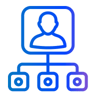
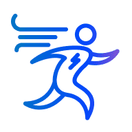
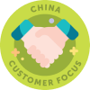

Library of Best Practices and
Frameworks
Drafts
Here you will find current recognition solutions as examples to your inspiration and drafts for your customized Recognition Program divided into 4 groups:
- Project / Account
- Unit / Practice
- Location
- Role
Project / Account

Example 1
AXS Project
Good execution of tasks and performing of duties according
to
your
role doesn’t automatically lead to the granting of bonus. It’s all about salary
The nature of bonus is beyond day-to-day activities. It is
something that brings “EXTRA Value” to the project
“EXTRA Value” is about result and means doing more than
expected, better than expected or something new that nobody did before

AXS Focus on Customer
Description:
For acting proactively in Customer’s interests and establishing trustful
relationships.
Who:
Person
Focus on Team
Description:
For facilitating people development and susses and for fostering team spirit.
Who:
Person

AXS Contributor
Description:
For making AXS project even better every day.
Who:
Person

AXS Successful delivery
Description:
For hard work towards delivery excellence.
Who:
Person/Team

AXS Veteran
Description:
For continuous successful work on AXS project.
Who:
Person

AXS Chapter hero
Description:
For valuable contribution into Chapter activities. Your help and proactivity are
important for project success.
Who:
Person

AXS Customer Award
Description:
For great job admitted by the Customer in any form of communication.
Who:
Person/Team

AXS knowledge expert
Description:
For sharing techStack expertise.
Who:
Person
Example 2
Thompson Reutes Account
On Spot Bonus (TR Account Bonus System)
What is spot bonus?
On Spot Bonus is a bonus, which can be provided
from Thomson Reuters project budget for individual extra-mile achievements on
the
project on monthly basis.
Who can be nominated?
Every project member from Junior to Chief level
(A1-A5) and Managers (B1) are eligible for On Spot Bonus. You can track monthly
statistics on how On Spot Bonuses were distributed per level here.
What are nomination criteria?
- A team member demonstrated the desire and ability to do the work that goes far beyond their direct responsibilities/seniority level within a certain month (so called "extra mile");
- At the same time the primary project work is expected to be done completely and in time;
- The impact of the achievement is significant and must have measurable project value;
- The achievements which affected more people and/or took much time to implement have a higher chance to be approved
What can’t be a reason for on spot bonus?
- Planned overtime which is compensated according to EPAM policies,
- Team achievements – in this case project team lead could request a team building to recognize team efforts or discuss another option with DM,
- Good performance of everyday tasks in frames of your qualification and project role – will be considered by DMs during quarterly performance evaluation.
How to nominate?
You may use one of the following ways:
a) Reply to a monthly "On Spot Bonus collection phase start" e-mail - if you want to nominate yourself (Please, don’t be shy to tell us about your achievements!);
b) Give one of 5 individual Thomson Reuters extra-mile badges via Heroes portal
at any moment:


c) Customer Appreciation Badge could be considered as a nomination for On Spot
Bonus by DM decision. In this case no action from you is expected.

Framework Draft for Project/ Account Recognition Program
Nomination
Criteria
Description
On behalf of
Guiding Star

Taking Proactive Ownership
By embodying this behavior, individuals show commitment, courage and responsibility for the planning, execution, and success of these persuits (initiatives/ activities/ OKRs) within the organization

Setting the example for colleagues
Signifies embodying our core values and work ethic. We acknowledge individuals who lead by example, inspiring their peers with their dedication, integrity, and professionalism. Their actions set a high standard, fostering a positive workplace culture and encouraging others to excel.
Making Impact through wide contribution
We value and celebrate employees who consistently embody the spirit of going above and beyond in their daily activities. This recognition is dedicated to those individuals who exhibit remarkable behaviors that contribute to the overall success and positive culture of our organization within multiple effective contributions to different extra miles activities.
Acknowledging extra-mile effort and positive (and lasting) impact with the assignment.
Process and delivery related to the current project/stream:
- Technology/ Management Excellence (People who exceed expectations from their current title);
- Running project specific initiative;
- Having outstanding results by applying global initiative;
- Development of framework/ solution matching newest trends that accelerate the delivery process
- Client & business related impact within the assigned account:
- Up-sales, helping extend with the current and grow account;
- Client relationship development & Expansion (Account/ Project heroes who contributed to process driving and transformation leading to raising customer trust)
Thank you for leading a positive impact on the work we do!
EPAM Project/ Account management
Software Craftsman

Promoting EPAM culture and mindset
Demonstrating loyalty to EPAM by being flexible, agile both in challengeable and successful times, being ready to support company withing any changes or transformations. Promoting EPAM DNA and culture in a daily routine withing certain actions help us to encourage people to make EPAM better place to work.
Acknowledging person’s outstanding skills are demonstrated at certain occasions:
- Development of new expertise (for example), including certifications and trainings;
- Resolving complicated roadblock with an elegant workaround demonstrating deep knowledge of tools and technology;
- Tool, framework, solution creation/ improvement which helped to optimize the work;
- Studying materials creation/ optimization for mentoring programs, educational programs, including e-learning options;
- Mentoring for hot or rare skills
Notes: focused on spectacular singular occasion, it’s more about immediate
You are true guru and master of the skill!
EPAM Project/ Account management
Delivery Contributor
Making Impact through wide contribution
We value and celebrate employees who consistently embody the spirit of going above and beyond in their daily activities. This recognition is dedicated to those individuals who exhibit remarkable behaviors that contribute to the overall success and positive culture of our organization within multiple effective contributions to different extra miles activities.
Setting the example for colleagues
Signifies embodying our core values and work ethic. We acknowledge individuals who lead by example, inspiring their peers with their dedication, integrity, and professionalism. Their actions set a high standard, fostering a positive workplace culture and encouraging others to excel.
Acknowledging contribution to reaching significant delivery milestones and specific outcome:
- Associated with successful delivery (big/important release), awarded after the fact
- Example cases for nomination:
- A successful release, excellent feedback from the customer is received (please, do not forget to attach a confirmation), certain persons are outlined and given praises;
- Several SCRUM sprints conclude an important business feature. There’re people that constantly show outstanding velocity;
- Any other occasions as deemed significant by DM that outline certain person’s contribution to team’s productivity and eventual successful delivery
Thank you for moving and shaking our project!
EPAM Project/ Account management
Strategic Decision-Maker

Making Smart Decisions
Demonstrating this behavior shows the ability to think critically, apply sound judgment, and effectively solve problems, ultimately contributing to the success of the organization. Individuals who excel in making smart decisions analyze information, assess risks, and consider multiple perspectives before taking decisive action. Their astute decision-making skills drive positive outcomes, enhance efficiency, and contribute to the overall growth and success of the organization.
For individuals who consistently demonstrate the ability to think critically, apply sound judgment, and make smart decisions that drive the success of the project/ account. These individuals possess the skills to analyze information, assess risks, and consider multiple perspectives, enabling them to make informed and strategic choices. Their astute decision-making skills result in positive outcomes, increased efficiency, and contribute to the overall growth and success of the project/ account.
Congratulations on your well-deserved Strategic Decision-Maker nomination! Your exceptional ability to think critically, apply sound judgment, and make smart decisions has been instrumental in driving our project's success. Thank you for your invaluable contributions and for consistently demonstrating your astute decision-making skills. Your ability to make smart decisions has truly helped propel our project forward.
EPAM Project/ Account management
Solution-driven Innovator

Proactively resolving challenges
Taking initiative to identify challenges, anticipate issues, and implement innovative solutions before they impact our workflow. Being transparent during in time problem definition, asking for help and fixing it via proposed solutions. We recognize and celebrate employees who exhibit this behavior, valuing their ability to enhance efficiency, foster collaboration, and drive positive outcomes for EPAM.
For individuals who proactively resolve challenges by taking initiative to identify issues, anticipate potential problems, and implement innovative solutions before they impact our project/ account workflow. These individuals demonstrate transparency in defining problems, seeking help when needed, and providing timely solutions. Their proactive approach enhances efficiency, fosters collaboration, and drives positive outcomes for EPAM and our project/account in particular.
Congratulations on receiving the Solution-driven Innovator nomination! Your proactive approach to resolving challenges is truly commendable. Your transparent communication in problem definition, willingness to seek assistance, and dedication to providing timely solutions are highly valued and appreciated. Thank you for your outstanding contributions and for driving positive outcomes that benefit project/account.
EPAM Project/ Account management
Customer Focus
Promoting EPAM culture and mindset
Demonstrating loyalty to EPAM by being flexible, agile both in challengeable and successful times, being ready to support company withing any changes or transformations. Promoting EPAM DNA and culture in a daily routine withing certain actions help us to encourage people to make EPAM better place to work.
Acting actively in customer’s interests; Achieving an important goal for a customer by going beyond the responsibilities scope; Establishing trustful relationship with a Customer.
We are delighted to recognize your outstanding customer focus. Your active engagement in customer interests, achievement of vital customer goals, and establishment of trustful relationships have truly set you apart. Thank you for your relentless dedication to our customers' success.
EPAM Project/ Account management
Focus on Team

Enhancing borderless collaboration with the focus on the result
Actively fostering teamwork and communication among diverse geographical locations. We recognize employees who champion collaboration across different locations, bridging gaps and promoting synergy. Their efforts enhance global connectivity, encourage knowledge exchange, and strengthen our collective capabilities, making EPAM a unified and thriving global community

Enhancing cross-function collaboration with the focus on the result
Actively encouraging teamwork and communication across departments. We recognize employees who champion collaboration, fostering a cohesive work environment and driving collective success for borderless EPAM

Supporting colleagues
Encompasses knowledge sharing, mentoring, striving for growth on the one hand and human empathy on the other. We value employees who generously share their expertise, guide others through mentorship, and show genuine empathy in their interactions, always acting with integrity. Recognizing and appreciating these behaviors fosters a collaborative and supportive workplace, where employees thrive together, learn from one another, and contribute to a harmonious team environment.
For facilitating people development and success and for fostering team spirit
Congratulations! Your commitment to facilitating people development and fostering team spirit is commendable. Your efforts in nurturing a positive team environment and ensuring everyone's success have not gone unnoticed. Thank you for your exceptional dedication to our team's growth and unity.
EPAM Project/ Account management
Curious Learner

Curiosity-driven Growth Enabler
We hold in high esteem and celebrate employees who embody an unwavering commitment to continuous learning. Embracing new and trending knowledge with humility, these individuals expand our possibilities and opportunities, contributing to a culture of ongoing growth and innovation within our organization
To individuals who demonstrate a constant thirst for knowledge and a dedication to studying and investigating new knowledge and technologies that contribute to the success of projects. These individuals go above and beyond by seeking out opportunities to expand their horizons and share their newfound knowledge with their team, fostering innovation and growth.
Thank you for embodying the spirit of a Curious Learner. Your insatiable thirst for knowledge and commitment to staying at the forefront of industry advancements have greatly contributed to the success of our projects. Your curiosity and dedication to widening the horizons of knowledge have had a profound impact on our team and the overall prosper of the project. Keep up the excellent work and continue to inspire others with your passion for learning. Congratulations on earning the Curious Learner badge!
EPAM Project/ Account management
Project/ Account Welcome
Promoting EPAM culture and mindset
Demonstrating loyalty to EPAM by being flexible, agile both in challengeable and successful times, being ready to support company withing any changes or transformations. Promoting EPAM DNA and culture in a daily routine withing certain actions help us to encourage people to make EPAM better place to work.
For the warm welcome words for the employee who has recently joined the project/ account
A heartfelt welcome to our project/account at EPAM! We're thrilled to have you on board and look forward to achieving great things together. Here's to a successful journey with us!
Peer to peer
Project/ Account Thank you
Promoting EPAM culture and mindset
Demonstrating loyalty to EPAM by being flexible, agile both in challengeable and successful times, being ready to support company withing any changes or transformations. Promoting EPAM DNA and culture in a daily routine withing certain actions help us to encourage people to make EPAM better place to work.
For expressing any type of appreciation for any reason among peers.
Thank you for making our project/account a better place. Together, we achieve remarkable things. Keep up the fantastic work!
Peer to peer
Project/ Account Helping Hand
Supporting colleagues
Encompasses knowledge sharing, mentoring, striving for growth on the one hand and human empathy on the other. We value employees who generously share their expertise, guide others through mentorship, and show genuine empathy in their interactions, always acting with integrity. Recognizing and appreciating these behaviors fosters a collaborative and supportive workplace, where employees thrive together, learn from one another, and contribute to a harmonious team environment.
For appreciating any help from the colleague, who supported besides his/her direct responsibilities.
I wanted to express my heartfelt appreciation for the incredible support you provided recently. Your willingness to lend a helping hand beyond your direct responsibilities did not go unnoticed. Your dedication to teamwork and your willingness to assist others truly exemplify the spirit of collaboration within our project/account.
Peer to peer
Fantastic Teammate
Enhancing borderless collaboration with the focus on the result
Actively fostering teamwork and communication among diverse geographical locations. We recognize employees who champion collaboration across different locations, bridging gaps and promoting synergy. Their efforts enhance global connectivity, encourage knowledge exchange, and strengthen our collective capabilities, making EPAM a unified and thriving global community
Enhancing cross-function collaboration with the focus on the result
Actively encouraging teamwork and communication across departments. We recognize employees who champion collaboration, fostering a cohesive work environment and driving collective success for borderless EPAM
Supporting colleagues
Encompasses knowledge sharing, mentoring, striving for growth on the one hand and human empathy on the other. We value employees who generously share their expertise, guide others through mentorship, and show genuine empathy in their interactions, always acting with integrity. Recognizing and appreciating these behaviors fosters a collaborative and supportive workplace, where employees thrive together, learn from one another, and contribute to a harmonious team environment.
Peer to peer recognition from any employee to any employee for any kind of support and help without restrictions and review. Feel free to recognize your teammates for any reason you think will empower them:
- For great teamwork and incredible results;
- For valuable help and taking care;
- For making something that impressed the employee’s colleagues;
- For being supportive and ready to help always when needed
We are proud to have you on our team. Your contributions and dedication are highly valued!
Peer to peer
Project/ Account Congratulation
Promoting EPAM culture and mindset
Demonstrating loyalty to EPAM by being flexible, agile both in challengeable and successful times, being ready to support company withing any changes or transformations. Promoting EPAM DNA and culture in a daily routine withing certain actions help us to encourage people to make EPAM better place to work.
Badge for project/ account celebrations
Heartful congratulations! Let’s this day be amazing and unforgettable!
Peer to peer
Unit / Practice
Example 1
Software Testing Division Recognition Program
Network Level. General Flow.

Network Catalyst
Description:
Network Catalyst implies someone who initiates or accelerates positive change.
What for:
Valuable input that provide a room for creating a new impact.
How often:
Ad-hoc
Who can give:
Steering Committee member by request of Heads of Nodes / By decision of Steering Committee on behalf of QE Network

Network Nexus
Description:
Network Nexus suggests a central figure or a hub within the network, someone crucial and interconnecting.
What for:
Valuable result making impact on all Network level.
How often:
2 or 1 times a year.
Who can give:
By decision of Steering Committee on behalf of QE Network
Network Legend
Description:
Network Legend denotes someone who has achieved an iconic status, an exemplary figure within the Network.
What for:
Extra valuable result making impact on all Network level or even QE globally.
How often:
2 or 1 times a year.
Who can give:
By decision of Steering Committee on behalf of QE Network
Network Level. Requirements
Nomination group
Trigger
Example
Processes improvement
Enhancing distributed organizational workflows, driving change processes, and ensuring efficient and cohesive network-wide operations.
- Suggesting Improvements
- Data-Driven Understanding
- Effective Implementation
- Cost and Time Efficiency
- Enhancing Performance
- Boosting Communication
- Scaling Outputs without
Introducing a centralized staffing management system accessible to all locations, enhancing cross- location collaboration.
Setting up a network-wide mentorship program, allowing experienced employees in one location to mentor those in another.
Strategy Work Enabling (OKR)
Driving organizational strategies across the network, leading and participating in OKR initiatives.
- OKR Leadership
- Initiative Driving
- Active Participation
- Valuable Contributions
Network Development Contribution
Providing exceptional support and assistance throughout the networked organization.
- Cross-Location Collaboration
- Being a Network Champion
Regularly showcasing success stories from one location to inspire and motivate others across the network.
QE Brand Promotion
Representing and elevating the organization's brand both within and outside the network.
- External Representation
- Internal Promotion
Presenting a case study at an international conference, highlighting the success of a project undertaken by the network.
Example 2
Salesforce Practice Annual Recognition Program
Eligibility: nominated can be A1-A4 level Salesforce people from EntApps Practice for different types of contribution to Salesforce practice development during the year.
Nominees can be recognized by Salesforce Leadership Team and by peers.
Nominations* can be used from the list, can be added or shortened (by the results of the year). Recognition is conducted during the regular Annual Salesforce Townhall.
Pleasant bonus: nominees get a Diploma, a pleasant Present (optionally, due to financial results of the year), and a special Badge.
Diploma
Badge
Nominations
Requirements
Ace Interviewer
For active participation in conducting maximum numbers of technical interviews per year
Career Booster
For driving (owning) the implementation of the mentoring programs, labs or other initiatives with the aim of career development.
Competency Keeper
For driving (owning) the initiatives around competency.
Path Finder
For driving (owning) the initiatives around creating new titles, career paths.
RM Rising Star
For being the excellent example of conducting RM responsibilities.
Conditions:
- being onboarded to RM role firstly in this year,
- having positive feedbacks,
- conducting people metrics without red zones: talks statistics (absence of outdated talks during the year; LevelUp promoting - 100% covering the team with Career target; Engagement level in the team - no lower than average in practice; has successful level up (ASMT) cases within the team)
Platinum MIC
For active participating and being speaker at external conferences promoting EPAM and Salesforce practice.
Pre-Sales Hero
For outstanding contribution to pre-sales process as extra mile activity.
Helping Hand**
For being supportive and ready to help always when needed. UPD! SF team mate with the biggest number received 'Thank you' badges*** in 2023
Appreciation Ambassador**
2023 NEW! SF team mate with the biggest number sent 'Thank you' badges*** in 2023
Framework Draft for Unit/ Practice Recognition Program
Nomination
Criteria
Description
On behalf of
Outstanding Contributor
Taking Proactive Ownership
By embodying this behavior, individuals show commitment, courage and responsibility for the planning, execution, and success of these persuits (initiatives/ activities/ OKRs) within the organization
Making Impact through wide contribution
We value and celebrate employees who consistently embody the spirit of going above and beyond in their daily activities. This recognition is dedicated to those individuals who exhibit remarkable behaviors that contribute to the overall success and positive culture of our organization within multiple effective contributions to different extra miles activities.
Promoting Unit/ Practice Brand, regular contribution and active participation/ ownership in initiatives withing the community. People who made outstanding contribution that exceeded expectations from their current title.
For your outstanding contribution, effort and attitude to overcome challenges with unbelievable outcomes. Thank you!
Unit/ Practice Management team
Delivery Star
Enhancing borderless collaboration with the focus on the result
Actively fostering teamwork and communication among diverse geographical locations. We recognize employees who champion collaboration across different locations, bridging gaps and promoting synergy. Their efforts enhance global connectivity, encourage knowledge exchange, and strengthen our collective capabilities, making EPAM a unified and thriving global community
Enhancing cross-function collaboration with the focus on the result
Actively encouraging teamwork and communication across departments. We recognize employees who champion collaboration, fostering a cohesive work environment and driving collective success for borderless EPAM
Supporting colleagues
Encompasses knowledge sharing, mentoring, striving for growth on the one hand and human empathy on the other. We value employees who generously share their expertise, guide others through mentorship, and show genuine empathy in their interactions, always acting with integrity. Recognizing and appreciating these behaviors fosters a collaborative and supportive workplace, where employees thrive together, learn from one another, and contribute to a harmonious team environment.
Proactively resolving challenges
Taking initiative to identify challenges, anticipate issues, and implement innovative solutions before they impact our workflow. Being transparent during in time problem definition, asking for help and fixing it via proposed solutions. We recognize and celebrate employees who exhibit this behavior, valuing their ability to enhance efficiency, foster collaboration, and drive positive outcomes for EPAM.
Pre-sales & Delivery of new capabilities (customer solution that affects Unit/Practice; Project specific initiative; Development of a framework/solution matching current trends that accelerate delivery process);
Client Relationship Development and Expansion;
Tool, framework, solution creation/ improvement which helped to optimize the work;
Significant delivery improvement: cost optimization, quality raise, time to market speed up;
Creation of new tools to improve our services and delivery approach;
For establishing communication, collaboration, relationship between Units, disciplines, locations, accounts;
Market and Client Relationship Development & Expansion.
For extraordinary technical contribution with valuable results.
For impact on client and technology.
Pre-Sales and Delivery of new capabilities.
Unit/ Practice Management team
People Developer
Promoting EPAM culture and mindset
Demonstrating loyalty to EPAM by being flexible, agile both in challengeable and successful times, being ready to support company withing any changes or transformations. Promoting EPAM DNA and culture in a daily routine withing certain actions help us to encourage people to make EPAM better place to work.
Setting the example for colleagues
Signifies embodying our core values and work ethic. We acknowledge individuals who lead by example, inspiring their peers with their dedication, integrity, and professionalism. Their actions set a high standard, fostering a positive workplace culture and encouraging others to excel.
Curiosity-driven Growth Enabler
We hold in high esteem and celebrate employees who embody an unwavering commitment to continuous learning. Embracing new and trending knowledge with humility, these individuals expand our possibilities and opportunities, contributing to a culture of ongoing growth and innovation within our organization
Contribution to Educational activities (Trainings, Mentoring, Community, Labs, ASMT, etc.);
Distinctive work in RM role – systematic and high quality completing RM-activities;
Uniting people and fostering team spirit;
Providing expert assistance and sharing valuable knowledge;
Support for discipline growth within GDO VS locations.
For the great contribution, facilitating people development and success, raising new talents.
Unit/ Practice Management team
Unit/ Practice Speaker
Promoting EPAM culture and mindset
Demonstrating loyalty to EPAM by being flexible, agile both in challengeable and successful times, being ready to support company withing any changes or transformations. Promoting EPAM DNA and culture in a daily routine withing certain actions help us to encourage people to make EPAM better place to work.
Employee participates in different public events as a speaker, ready to share knowledge and widen the horizon.
You did a brilliant speech and have excellent presentation skills! Thank you for participation and promotion our Unit/ Practice
Unit/ Practice Management team
Unit/ Practice Driver
Taking Proactive Ownership
By embodying this behavior, individuals show commitment, courage and responsibility for the planning, execution, and success of these persuits (initiatives/ activities/ OKRs) within the organization
Employee drives Unit/Practice activities, owns and drive one of the directions and implements programs/ initiatives.
You are great in driving Unit/ Practice initiatives and programs. Go on your awesome contribution!
Unit/ Practice Management team
Strategic Decision-Maker
Making Smart Decisions
Demonstrating this behavior shows the ability to think critically, apply sound judgment, and effectively solve problems, ultimately contributing to the success of the organization. Individuals who excel in making smart decisions analyze information, assess risks, and consider multiple perspectives before taking decisive action. Their astute decision-making skills drive positive outcomes, enhance efficiency, and contribute to the overall growth and success of the organization.
For individuals who consistently demonstrate the ability to think critically, apply sound judgment, and make smart decisions that drive the success of the unit/ practice. These individuals possess the skills to analyze information, assess risks, and consider multiple perspectives, enabling them to make informed and strategic choices. Their astute decision-making skills result in positive outcomes, increased efficiency, and contribute to the overall growth and success of the unit/ practice.
Congratulations on your well-deserved Strategic Decision-Maker nomination! Your exceptional ability to think critically, apply sound judgment, and make smart decisions has been instrumental in driving our project's success. Thank you for your invaluable contributions and for consistently demonstrating your astute decision-making skills. Your ability to make smart decisions has truly helped propel our unit/ practice forward.
Unit/ Practice Management team
Expertise Developer
Taking Proactive Ownership
By embodying this behavior, individuals show commitment, courage and responsibility for the planning, execution, and success of these persuits (initiatives/ activities/ OKRs) within the organization
New skills development (global), formalization and promotion that effects EPAM practice capabilities;
Development of new expertise; Tool, framework, solution creation/improvement;
Studying materials creation/optimization for mentoring programs, educational programs, including elearning options.
Your dedication to developing new skills globally, formalizing and promoting practices, creating innovative tools and solutions, and optimizing educational materials has significantly enhanced our company's capabilities.
Congratulations on this well-deserved recognition! Your continuous commitment to enhancing our capabilities is truly appreciated.
Unit/ Practice Management team
Unit/ Practice Interviewer
Making Impact through wide contribution
We value and celebrate employees who consistently embody the spirit of going above and beyond in their daily activities. This recognition is dedicated to those individuals who exhibit remarkable behaviors that contribute to the overall success and positive culture of our organization within multiple effective contributions to different extra miles activities.
For active participation in conducting maximum numbers of technical interviews per year
Your dedication to evaluating candidates and contributing to our team's growth is highly valued. Thank you for your commitment to maintaining our high interviewing standards and for helping us bring in exceptional talent to our Unit/ Practice
Unit/ Practice Management team
RM Rising Star
Setting the example for colleagues
Signifies embodying our core values and work ethic. We acknowledge individuals who lead by example, inspiring their peers with their dedication, integrity, and professionalism. Their actions set a high standard, fostering a positive workplace culture and encouraging others to excel.
Supporting colleagues
Encompasses knowledge sharing, mentoring, striving for growth on the one hand and human empathy on the other. We value employees who generously share their expertise, guide others through mentorship, and show genuine empathy in their interactions, always acting with integrity. Recognizing and appreciating these behaviors fosters a collaborative and supportive workplace, where employees thrive together, learn from one another, and contribute to a harmonious team environment.
For being the excellent example of conducting RM responsibilities.
Conditions
- being onboarded to RM role firstly in this year,
- having positive feedbacks,
- conducting people metrics without red zones: talks statistics (absence of outdated talks during the year; LevelUp promoting - 100% covering the team with Career target; Engagement level in the team - no lower than average in practice; has successful level up (ASMT) cases within the team)
Your dedication to maintaining high standards, promoting initiatives, and ensuring a positive team engagement level have not gone unnoticed. Your successful cases within the team further exemplify your commitment to our Unit's/ Practice’s growth and development.
Congratulations on this well-deserved achievement! Your hard work and dedication to your role are truly commendable.
EPAM Project/ Account management
Welcome on Unit/
Practice Board
Promoting EPAM culture and mindset
Demonstrating loyalty to EPAM by being flexible, agile both in challengeable and successful times, being ready to support company withing any changes or transformations. Promoting EPAM DNA and culture in a daily routine withing certain actions help us to encourage people to make EPAM better place to work.
The Badge is for greetings new teammates in Unit/ Practice
A heartfelt welcome to our Unit/ Practice at EPAM! We're thrilled to have you on board and look forward to achieving great things together. Here's to a successful journey with us!
Peer to peer
Unit/ Practice Thank you
Promoting EPAM culture and mindset
Demonstrating loyalty to EPAM by being flexible, agile both in challengeable and successful times, being ready to support company withing any changes or transformations. Promoting EPAM DNA and culture in a daily routine withing certain actions help us to encourage people to make EPAM better place to work.
For expressing any type of appreciation for any reason among peers.
Thank you for making our Unit/ Practice a better place. Together, we achieve remarkable things. Keep up the fantastic work!
Peer to peer
Unit/ Practice Helping Hand
Supporting colleagues
Encompasses knowledge sharing, mentoring, striving for growth on the one hand and human empathy on the other. We value employees who generously share their expertise, guide others through mentorship, and show genuine empathy in their interactions, always acting with integrity. Recognizing and appreciating these behaviors fosters a collaborative and supportive workplace, where employees thrive together, learn from one another, and contribute to a harmonious team environment.
For being supportive and ready to help always when needed.
Your readiness to lend a helping hand and your supportive nature have created a collaborative and inclusive environment. Your dedication to teamwork and your willingness to help others are truly valued and contribute significantly to our team's success.
Thank you for your unwavering support.
Peer to peer
Fantastic Unit/ Practice Teammate
Enhancing borderless collaboration with the focus on the result
Actively fostering teamwork and communication among diverse geographical locations. We recognize employees who champion collaboration across different locations, bridging gaps and promoting synergy. Their efforts enhance global connectivity, encourage knowledge exchange, and strengthen our collective capabilities, making EPAM a unified and thriving global community
Enhancing cross-function collaboration with the focus on the result
Actively encouraging teamwork and communication across departments. We recognize employees who champion collaboration, fostering a cohesive work environment and driving collective success for borderless EPAM
Supporting colleagues
Encompasses knowledge sharing, mentoring, striving for growth on the one hand and human empathy on the other. We value employees who generously share their expertise, guide others through mentorship, and show genuine empathy in their interactions, always acting with integrity. Recognizing and appreciating these behaviors fosters a collaborative and supportive workplace, where employees thrive together, learn from one another, and contribute to a harmonious team environment.
Peer to peer recognition from any employee to any employee for any kind of support withing the location and help without restrictions and review. Feel free to recognize your teammates for any reason you think will empower them: For great teamwork and incredible results;
For valuable help and taking care;
For making something that impressed the employee’s colleagues;
For being supportive and ready to help always when needed
We are proud to have you on our team. Your contributions and dedication are highly valued!
Peer to peer
Unit/ Practice Congratulation
Promoting EPAM culture and mindset
Demonstrating loyalty to EPAM by being flexible, agile both in challengeable and successful times, being ready to support company withing any changes or transformations. Promoting EPAM DNA and culture in a daily routine withing certain actions help us to encourage people to make EPAM better place to work.
The Badge is for any type of the warmest congratulations
Heartful congratulations! Let’s this day be amazing and unforgettable!
Peer to peer
Additional, applicable for any Units:
Nomination
Criteria
Description
On behalf of
Outstanding Innovation Star
Curiosity-driven Growth Enabler
We hold in high esteem and celebrate employees who embody an unwavering commitment to continuous learning. Embracing new and trending knowledge with humility, these individuals expand our possibilities and opportunities, contributing to a culture of ongoing growth and innovation within our organization
Recognizes an individual who introduced innovative solutions, tools, or processes that significantly improved departmental efficiency or effectiveness. The management acknowledges the employee's creativity and its impact on the department.
Congratulations on this well-deserved recognition! Thank you for your continuous efforts in driving innovation within our Unit.
EPAM No-Production Unit Management
Team Collaboration Excellence
Enhancing borderless collaboration with the focus on the result
Actively fostering teamwork and communication among diverse geographical locations. We recognize employees who champion collaboration across different locations, bridging gaps and promoting synergy. Their efforts enhance global connectivity, encourage knowledge exchange, and strengthen our collective capabilities, making EPAM a unified and thriving global community
Enhancing cross-function collaboration with the focus on the result
Actively encouraging teamwork and communication across departments. We recognize employees who champion collaboration, fostering a cohesive work environment and driving collective success for borderless EPAM
Honors a team member who actively collaborates with colleagues across departments and different locations, fostering a culture of teamwork, and enhancing overall team productivity. Management acknowledges the individual’s role in promoting collaboration, enhancing teamwork, and achieving collective goals.
Your dedication to actively collaborating with colleagues across departments and locations has fostered a culture of teamwork and significantly enhanced our overall team productivity.
Your commitment to promoting collaboration, enhancing teamwork, and achieving our collective goals has not gone unnoticed. Your efforts have played a pivotal role in creating a positive and collaborative work environment. Thank you!
EPAM No-Production Unit Management
Strategic Decision-Maker
Making Smart Decisions
Demonstrating this behavior shows the ability to think critically, apply sound judgment, and effectively solve problems, ultimately contributing to the success of the organization. Individuals who excel in making smart decisions analyze information, assess risks, and consider multiple perspectives before taking decisive action. Their astute decision-making skills drive positive outcomes, enhance efficiency, and contribute to the overall growth and success of the organization.
For individuals who consistently demonstrate the ability to think critically, apply sound judgment, and make smart decisions that drive the success of the unit/ practice. These individuals possess the skills to analyze information, assess risks, and consider multiple perspectives, enabling them to make informed and strategic choices. Their astute decision-making skills result in positive outcomes, increased efficiency, and contribute to the overall growth and success of the unit/ practice.
Congratulations on your well-deserved Strategic Decision-Maker nomination! Your exceptional ability to think critically, apply sound judgment, and make smart decisions has been instrumental in driving our project's success. Thank you for your invaluable contributions and for consistently demonstrating your astute decision-making skills. Your ability to make smart decisions has truly helped propel our unit/ practice forward.
EPAM No-Production Unit Management
Ownership Champion
Taking Proactive Ownership
By embodying this behavior, individuals show commitment, courage and responsibility for the planning, execution, and success of these persuits (initiatives/ activities/ OKRs) within the organization
For individuals who consistently demonstrate commitment, courage, and responsibility by taking proactive ownership for the planning, execution, and success of initiatives, activities, and OKRs within the unit. These individuals exhibit a proactive mindset, actively seeking opportunities to contribute and drive progress. By embodying this behavior, they enhance accountability, foster collaboration, and ultimately contribute to the success and growth of the unit.
Congratulations on being nominated as a Proactive Ownership Champion! Your unwavering commitment, courage, and responsibility in taking proactive ownership for initiatives, activities, and OKRs within our unit is truly inspiring. Your proactive mindset and willingness to contribute have enhanced accountability and fostered collaboration among our team. Your dedication to the planning, execution, and success of these endeavors has greatly contributed to the overall growth and success of our organization. Thank you for embodying the spirit of proactive ownership and for your invaluable contributions.
EPAM No-Production Unit Management
Exceptional Problem Solver
Proactively resolving challenges
Taking initiative to identify challenges, anticipate issues, and implement innovative solutions before they impact our workflow. Being transparent during in time problem definition, asking for help and fixing it via proposed solutions. We recognize and celebrate employees who exhibit this behavior, valuing their ability to enhance efficiency, foster collaboration, and drive positive outcomes for EPAM.
Celebrates an employee skilled at addressing complex issues, finding creative solutions, and resolving challenges, leading to positive outcomes for the department. Management recognizes the employee’s problem-solving skills and their positive impact on the department's operations.
Your innovative solutions and strategic thinking have significantly contributed to overcoming obstacles within our department.
Your dedication to finding effective solutions, even in the face of complex problems, is truly commendable. Your approach to problem-solving serves as an inspiration to us all.
EPAM No-Production Unit Management
Innovation in Process Improvement
Promoting EPAM culture and mindset
Demonstrating loyalty to EPAM by being flexible, agile both in challengeable and successful times, being ready to support company withing any changes or transformations. Promoting EPAM DNA and culture in a daily routine withing certain actions help us to encourage people to make EPAM better place to work.
Recognizes an individual who identified and implemented process improvements, leading to enhanced departmental efficiency and productivity. Management acknowledges the employee’s proactive approach to process enhancement and its positive impact on the department’s operations.
Your proactive approach, identifying and implementing process enhancements, has significantly boosted our departmental efficiency and productivity.
Your dedication to finding innovative solutions and your commitment to streamlining our operations have not gone unnoticed. Your efforts have played a pivotal role in enhancing our overall efficiency. Thank you!
EPAM No-Production Unit Management
Impact-Maker Extramiler
Making Impact through wide contribution
We value and celebrate employees who consistently embody the spirit of going above and beyond in their daily activities. This recognition is dedicated to those individuals who exhibit remarkable behaviors that contribute to the overall success and positive culture of our organization within multiple effective contributions to different extra miles activities.
For individuals who consistently embody the spirit of going above and beyond in their daily activities, making a wide contribution that significantly impacts the success and positive culture of our unit. These exceptional individuals exhibit remarkable behaviors and demonstrate their dedication through multiple effective contributions to different extra mile activities. We value and celebrate their commitment to making a meaningful impact on our collective success and fostering a positive work environment.
Congratulations on receiving the Impact-Maker Extramiler nomination! Your consistent commitment to going above and beyond in your daily activities is truly commendable. Your wide contributions and outstanding behaviors have significantly impacted the success and positive culture of our unit. Your dedication to multiple extra mile activities demonstrates your deep passion and commitment to making a lasting impact. We value and celebrate your remarkable contributions and extend our sincere gratitude for your efforts.
EPAM No-Production Unit Management
Cross-Functional Collaboration Star
Enhancing cross-function collaboration with the focus on the result
Actively encouraging teamwork and communication across departments. We recognize employees who champion collaboration, fostering a cohesive work environment and driving collective success for borderless EPAM
Honors a team member who effectively collaborates with different departments, fostering cross-functional partnerships and achieving shared objectives. Management recognizes the employee’s role in promoting cross-functional collaboration, which contributes to organizational synergy.
Your exceptional ability to collaborate effectively with different departments, fostering cross-functional partnerships and achieving shared objectives, has not only enriched our team but also contributed significantly to our organizational synergy.
Your dedication to promoting cross-functional collaboration and your role in aligning teams to achieve common goals have been instrumental. Your efforts are a testament to your commitment to our organization's success.
EPAM No-Production Unit Management
Exemplary Role Model
Setting the example for colleagues
Signifies embodying our core values and work ethic. We acknowledge individuals who lead by example, inspiring their peers with their dedication, integrity, and professionalism. Their actions set a high standard, fostering a positive workplace culture and encouraging others to excel.
For individuals who consistently set the example for their colleagues by embodying our core values and work ethic. These individuals inspire their peers with their dedication, integrity, and professionalism. Through their actions, they set a high standard, fostering a positive workplace culture and encouraging others to excel. Their leading by example not only contributes to individual and team success but also strengthens the overall fabric of our unit.
Congratulations on being recognized as an Exemplary Role Model! Your dedication, integrity, and professionalism serve as an inspiration to your colleagues. By embodying our core values and work ethic, you have set a high standard for others to follow. Thank you for leading by example and continuously motivating others to strive for greatness. Your contributions are truly valued and appreciated.
EPAM No-Production Unit Management
Unit Helping Hand
Supporting colleagues
Encompasses knowledge sharing, mentoring, striving for growth on the one hand and human empathy on the other. We value employees who generously share their expertise, guide others through mentorship, and show genuine empathy in their interactions, always acting with integrity. Recognizing and appreciating these behaviors fosters a collaborative and supportive workplace, where employees thrive together, learn from one another, and contribute to a harmonious team environment.
For being supportive and ready to help always when needed.
Your readiness to lend a helping hand and your supportive nature have created a collaborative and inclusive environment. Your dedication to teamwork and your willingness to help others are truly valued and contribute significantly to our team's success. Thank you for your unwavering support.
Peer to peer
Welcome on Unit Board
Promoting EPAM culture and mindset
Demonstrating loyalty to EPAM by being flexible, agile both in challengeable and successful times, being ready to support company withing any changes or transformations. Promoting EPAM DNA and culture in a daily routine withing certain actions help us to encourage people to make EPAM better place to work.
The Badge is for greetings new teammates in Unit
A heartfelt welcome to our Unit at EPAM! We're thrilled to have you on board and look forward to achieving great things together. Here's to a successful journey with us!
Peer to peer
Unit Congratulation
Promoting EPAM culture and mindset
Demonstrating loyalty to EPAM by being flexible, agile both in challengeable and successful times, being ready to support company withing any changes or transformations. Promoting EPAM DNA and culture in a daily routine withing certain actions help us to encourage people to make EPAM better place to work.
The Badge is for any type of the warmest congratulations
Heartful congratulations! Let’s this day be amazing and unforgettable!
Peer to peer
Unit Thank you
Promoting EPAM culture and mindset
Demonstrating loyalty to EPAM by being flexible, agile both in challengeable and successful times, being ready to support company withing any changes or transformations. Promoting EPAM DNA and culture in a daily routine withing certain actions help us to encourage people to make EPAM better place to work.
For expressing any type of appreciation
Thank you for making our Unit a better place. Together, we achieve remarkable things. Keep up the fantastic work!
Peer to peer
Fantastic Unit Teammate
Enhancing borderless collaboration with the focus on the result
Actively fostering teamwork and communication among diverse geographical locations. We recognize employees who champion collaboration across different locations, bridging gaps and promoting synergy. Their efforts enhance global connectivity, encourage knowledge exchange, and strengthen our collective capabilities, making EPAM a unified and thriving global community
Enhancing cross-function collaboration with the focus on the result
Actively encouraging teamwork and communication across departments. We recognize employees who champion collaboration, fostering a cohesive work environment and driving collective success for borderless EPAM
Supporting colleagues
Encompasses knowledge sharing, mentoring, striving for growth on the one hand and human empathy on the other. We value employees who generously share their expertise, guide others through mentorship, and show genuine empathy in their interactions, always acting with integrity. Recognizing and appreciating these behaviors fosters a collaborative and supportive workplace, where employees thrive together, learn from one another, and contribute to a harmonious team environment.
Peer to peer recognition from any employee to any employee for any kind of support withing the location and help without restrictions and review. Feel free to recognize your teammates for any reason you think will empower them: For great teamwork and incredible results;
For valuable help and taking care;
For making something that impressed the employee’s colleagues;
For being supportive and ready to help always when needed
We are proud to have you on our team. Your contributions and dedication are highly valued!
Peer to peer
Location
Example 1.
Vietnam Quarterly Recognition
Program
Stars of the quarter (SOQ)
With the Stars of the Quarter awards we want to ensure that we recognize those people who are giving an invaluable contribution to EPAM without always being on the spotlight.
The award is not about projects or teams, but it is about what we do as employees to make EPAM Vietnam a more successful organization and increase our professional excellence.
At EPAM Vietnam we value small behaviors that make a huge difference in the life of EPAMers. We should carefully notice when those behaviors happen and be sure that we recognize them!
You can nominate your Vietnam colleagues based on 5 behaviors that we want to encourage in our growing VN office:
Brand Ambassador
We are people who believe in the mission of EPAM and want to ensure we find & persuade the best people on the ride with us.
- Understand & embrace our brand
- Share someone's post on social media
- Talk in public groups about what EPAM is about
Contribution to Office Growth
For extraordinary efforts in internal activities to grow and expand our team, give our team members more opportunities in EPAM.
- We go beyond the call of duty to grow the capability of the VN team.
- We initiate and run new programs (Social Marketing, Referrals, Vietnam Engineering Community)
- We get involved with initiatives and activities around the office (and remotely)
- We support our Elevate, Talent Acquisition, CSR, HR events
- When we see someone having difficulties, we give friendly support
Customer Focus
For visibly performing above and beyond in the viewpoint of the customer before, during and after projects. For being bold and driving great partnerships with our clients. We are obsessed by delivering value to our customers, and we can easily adapt to changing requirements.
- Know who the customers are and what they need
- Challenge the customers to find better solutions to their problems
- Change my actions based on the feedback from the customers
People Development
For efforts to increase the skill set of the Vietnam office, providing expert assistance and sharing valuable knowledge, encouraging and motivating others to succeed.
- We share our expertise by leading formal and informal training sessions.
- We understand what motivates the people around us
- We help people figure out what their goals are, at work and in life
- We always have a positive attitudes towards others.
Team Player
For performing above and beyond to support the team without being asked, selflessly taking on unpopular and challenging tasks, building team atmosphere and creating an atmosphere of positivity and support.

Rules and conditions
Anyone can nominate colleagues in the Vietnam office;
EPAMers from anywhere also can nominate people in Vietnam.
- Nominations for each quarter need to be completed by the last day of the quarter
- Please clearly state the reason for the award in the comments that go with the badge. The award will be made on the value of the contribution.
- EPAM Vietnam's Committee (Country Manager, RMs and HR) will consolidate the badges report and make a decision within the first 2 weeks of the next quarter.
Example 2.
China Annual Recognition Program

Rules and conditions
Anyone can vote for colleagues in China; people in one city also can give votes to people in other cities.
- The voting period is until Jun 30.
- There are 5 special nomination categories.
- Peer to Peer: Winners for these three categories “Knowledge Sharing” “People Focus” “Team Player” will be voted by peers. You will have 3 votes in each nomination category.
- Managers to peers: Winners for these two categories “Customer Focus” and “Contribution to EPAM Growth” will be voted by managers, who are in these two DLs (WFTProjectManagersChina@epam.com>; OrgResourceManagersChina@epam.com) have access to these two badges.
- There will be up to 6 winners for each category at country level.
Reward
To Winners: post all winners in the Result Letter. All winners get one trophy and a prize
To Givers: post the Most Active Badge Givers in the Result Letter. All Most Active Badge Givers get a specific “Proactive Role Model” badge
Ceremony:
Local HR organizes to distribute the Trophy to the winners offline.
Framework Draft for Locational Recognition Program
Nomination
Criteria
Description
On behalf of
Location Delivery Champion
Setting the example for colleagues
Signifies embodying our core values and work ethic. We acknowledge individuals who lead by example, inspiring their peers with their dedication, integrity, and professionalism. Their actions set a high standard, fostering a positive workplace culture and encouraging others to excel.
Specific achievements on EPAM Location level in terms of business and delivery.
Recognize individuals or teams who have achieved outstanding results in the delivery of products or services within the local market, ensuring high-quality services that meet customer expectations.
Your outstanding results in delivering products or services within our local market have been truly remarkable.
Your dedication to ensuring high-quality services that consistently meet and exceed customer expectations has not only contributed to our local business success but has also strengthened our company's reputation. Your specific achievements on the company's Location level demonstrate your commitment to excellence.
Thank you!
EPAM Location Management team
EPAM Location Value Creator
Setting the example for colleagues
Signifies embodying our core values and work ethic. We acknowledge individuals who lead by example, inspiring their peers with their dedication, integrity, and professionalism. Their actions set a high standard, fostering a positive workplace culture and encouraging others to excel.
Taking Proactive Ownership
By embodying this behavior, individuals show commitment, courage and responsibility for the planning, execution, and success of these persuits (initiatives/ activities/ OKRs) within the organization
Specific achievements on EPAM location level in terms of people and Location development. Participation/ ownership in strategic initiatives of the location, achieving location OKRs.
Your specific contributions to people and location development, as well as your active participation in strategic initiatives, have been truly exceptional.
Your dedication to achieving Location OKRs and your role in driving our location's strategic initiatives have significantly contributed to our company's growth and success. Your impact as a value creator within our location has been invaluable, shaping our team's development and positively influencing our organizational goals.
EPAM Location Management team
EPAM Location Employee Engagement and Recognition
Promoting EPAM culture and mindset
Demonstrating loyalty to EPAM by being flexible, agile both in challengeable and successful times, being ready to support company withing any changes or transformations. Promoting EPAM DNA and culture in a daily routine withing certain actions help us to encourage people to make EPAM better place to work.
Recognize individuals or teams who have made significant contributions to employee engagement and recognition programs, creating a culture of appreciation, recognition, and celebration within the local office or region
Your significant contributions to employee engagement and recognition programs have created a culture of appreciation, recognition, and celebration within our local office or region.
Your dedication to fostering a positive work environment, where employees feel appreciated and celebrated, has not gone unnoticed. Your initiatives have played a pivotal role in enhancing employee morale and building a sense of community within our location.
EPAM Location Management team
EPAM Location Brand Ambassador
Promoting EPAM culture and mindset
Demonstrating loyalty to EPAM by being flexible, agile both in challengeable and successful times, being ready to support company withing any changes or transformations. Promoting EPAM DNA and culture in a daily routine withing certain actions help us to encourage people to make EPAM better place to work.
Promoting EPAM Location culture and values internally and externally. Recognize employees who have become ambassadors for the company's brand or products within the local market, creating positive associations with the brand, promoting the company's vision and values, and attracting potential customers, representing EPAM location on social media and within external events.
Your outstanding efforts in promoting EPAM's culture and values internally and externally have made a significant impact on our local market.
Your dedication to representing our brand on social media, within external events, and in interactions with potential customers has created positive associations with EPAM. Your enthusiasm in promoting our company's vision and values has not only enhanced our brand reputation but has also attracted valuable opportunities for our location.
EPAM Location Management team
EPAM Location Office Growth
Promoting EPAM culture and mindset
Demonstrating loyalty to EPAM by being flexible, agile both in challengeable and successful times, being ready to support company withing any changes or transformations. Promoting EPAM DNA and culture in a daily routine withing certain actions help us to encourage people to make EPAM better place to work.
Recognize individuals or teams who have made a valuable contribution to the growth and expansion of an office in the local market, including gaining new clients, developing new products/services, or building strategic relationships.
Your efforts in gaining new clients, developing new products/services, and building strategic relationships have been invaluable to our office's success.
Your dedication to expanding our office's reach and impact has not gone unnoticed. Your achievements have significantly contributed to our growth, and your strategic initiatives have opened new doors for our organization.
EPAM Location Management team
Strategic Decision-Maker
Making Smart Decisions
Demonstrating this behavior shows the ability to think critically, apply sound judgment, and effectively solve problems, ultimately contributing to the success of the organization. Individuals who excel in making smart decisions analyze information, assess risks, and consider multiple perspectives before taking decisive action. Their astute decision-making skills drive positive outcomes, enhance efficiency, and contribute to the overall growth and success of the organization.
For individuals who consistently demonstrate the ability to think critically, apply sound judgment, and make smart decisions that drive the success of the unit/ practice. These individuals possess the skills to analyze information, assess risks, and consider multiple perspectives, enabling them to make informed and strategic choices. Their astute decision-making skills result in positive outcomes, increased efficiency, and contribute to the overall growth and success of the unit/ practice.
Congratulations on your well-deserved Strategic Decision-Maker nomination! Your exceptional ability to think critically, apply sound judgment, and make smart decisions has been instrumental in driving our project's success. Thank you for your invaluable contributions and for consistently demonstrating your astute decision-making skills. Your ability to make smart decisions has truly helped propel our unit/ practice forward.
EPAM Location Management team
Exceptional Problem Solver
Proactively resolving challenges
Taking initiative to identify challenges, anticipate issues, and implement innovative solutions before they impact our workflow. Being transparent during in time problem definition, asking for help and fixing it via proposed solutions. We recognize and celebrate employees who exhibit this behavior, valuing their ability to enhance efficiency, foster collaboration, and drive positive outcomes for EPAM.
Celebrates an employee skilled at addressing complex issues, finding creative solutions, and resolving challenges, leading to positive outcomes for the location. Management recognizes the employee's problem-solving skills and their positive impact on the location's operations.
Your innovative solutions and strategic thinking have significantly contributed to overcoming obstacles within our location.
Your dedication to finding effective solutions, even in the face of complex problems, is truly commendable. Your approach to problem-solving serves as an inspiration to us all.
EPAM Location Management team
Impact-Maker Extramiler
Making Impact through wide contribution
We value and celebrate employees who consistently embody the spirit of going above and beyond in their daily activities. This recognition is dedicated to those individuals who exhibit remarkable behaviors that contribute to the overall success and positive culture of our organization within multiple effective contributions to different extra miles activities.
For individuals who consistently embody the spirit of going above and beyond in their daily activities, making a wide contribution that significantly impacts the success and positive culture of our location. These exceptional individuals exhibit remarkable behaviors and demonstrate their dedication through multiple effective contributions to different extra mile activities. We value and celebrate their commitment to making a meaningful impact on our collective success and fostering a positive work environment.
Congratulations on receiving the Impact-Maker Extramiler nomination! Your consistent commitment to going above and beyond in your daily activities is truly commendable. Your wide contributions and outstanding behaviors have significantly impacted the success and positive culture of our location. Your dedication to multiple extra mile activities demonstrates your deep passion and commitment to making a lasting impact. We value and celebrate your remarkable contributions and extend our sincere gratitude for your efforts.
EPAM Location Management team
Curious Learner
Curiosity-driven Growth Enabler
We hold in high esteem and celebrate employees who embody an unwavering commitment to continuous learning. Embracing new and trending knowledge with humility, these individuals expand our possibilities and opportunities, contributing to a culture of ongoing growth and innovation within our organization
To individuals who demonstrate a constant thirst for knowledge and a dedication to studying and investigating new knowledge and technologies that contribute to the success of location. These individuals go above and beyond by seeking out opportunities to expand their horizons and share their newfound knowledge with their team, fostering innovation and growth.
Thank you for embodying the spirit of a Curious Learner. Your insatiable thirst for knowledge and commitment to staying at the forefront of industry advancements have greatly contributed to the success of our location. Your curiosity and dedication to widening the horizons of knowledge have had a profound impact on our team and the overall prosper of the location. Keep up the excellent work and continue to inspire others with your passion for learning. Congratulations on earning the Curious Learner badge!
EPAM Location Management team
Location Thank You
Promoting EPAM culture and mindset
Demonstrating loyalty to EPAM by being flexible, agile both in challengeable and successful times, being ready to support company withing any changes or transformations. Promoting EPAM DNA and culture in a daily routine withing certain actions help us to encourage people to make EPAM better place to work.
General thank you with national symbols and specifics
Thank you for making our Location a better place. Together, we achieve remarkable things. Keep up the fantastic work!
Peer to peer
Location Helping Hand
Supporting colleagues
Encompasses knowledge sharing, mentoring, striving for growth on the one hand and human empathy on the other. We value employees who generously share their expertise, guide others through mentorship, and show genuine empathy in their interactions, always acting with integrity. Recognizing and appreciating these behaviors fosters a collaborative and supportive workplace, where employees thrive together, learn from one another, and contribute to a harmonious team environment.
For appreciating any help from the colleague, who supported besides his/her direct responsibilities.
I wanted to express my heartfelt appreciation for the incredible support you provided recently. Your willingness to lend a helping hand beyond your direct responsibilities did not go unnoticed. Your dedication to teamwork and your willingness to assist others truly exemplify the spirit of collaboration within our project/account.
Peer to peer
Fantastic Teammate
Enhancing borderless collaboration with the focus on the result
Actively fostering teamwork and communication among diverse geographical locations. We recognize employees who champion collaboration across different locations, bridging gaps and promoting synergy. Their efforts enhance global connectivity, encourage knowledge exchange, and strengthen our collective capabilities, making EPAM a unified and thriving global community
Enhancing cross-function collaboration with the focus on the result
Actively encouraging teamwork and communication across departments. We recognize employees who champion collaboration, fostering a cohesive work environment and driving collective success for borderless EPAM
Supporting colleagues
Encompasses knowledge sharing, mentoring, striving for growth on the one hand and human empathy on the other. We value employees who generously share their expertise, guide others through mentorship, and show genuine empathy in their interactions, always acting with integrity. Recognizing and appreciating these behaviors fosters a collaborative and supportive workplace, where employees thrive together, learn from one another, and contribute to a harmonious team environment.
Peer to peer recognition from any employee to any employee for any kind of support and help without restrictions and review. Feel free to recognize your teammates for any reason you think will empower them:
- For great teamwork and incredible results;
- For valuable help and taking care;
- For making something that impressed the employee's colleagues;
- For being supportive and ready to help always when needed
We are proud to have you on our team. Your contributions and dedication are highly valued!
Peer to peer
Location Congratulation
Promoting EPAM culture and mindset
Demonstrating loyalty to EPAM by being flexible, agile both in challengeable and successful times, being ready to support company withing any changes or transformations. Promoting EPAM DNA and culture in a daily routine withing certain actions help us to encourage people to make EPAM better place to work.
Badge for project/ account celebrations
Heartful congratulations! Let's this day be amazing and unforgettable!
Peer to peer
Role
Example
Recognition program for Resource Manager role
The primary objective of the Resource Manager Recognition Initiative is to acknowledge and celebrate the significant contributions of Resource Managers to the organization.
Key Benefits:
- Motivation and Promotion: Recognizing Resource Managers' impact on the company fosters motivation and encourages their continuous dedication to the role.
- High-Potential Visibility: The initiative highlights high-potential Resource Managers, giving them the opportunity to showcase their exceptional skills and commitment to the organization.
- Annual Bonus Campaign Integration: Nominations and recognition received through the initiative can be taken into consideration during the annual bonus campaign, adding an additional layer of evaluation for performance recognition and rewards.
- Expressing Gratitude: The recognition program serves as a meaningful way for the organization to express its sincere appreciation for the hard work and dedication of Resource Managers.
Through this initiative, the organization aims to create a culture of appreciation and encouragement, empowering Resource Managers to continue making a significant impact on the company's growth and success.
To ensure comprehensive coverage of contributors and facilitate a more systematic approach to recognizing Resource Manager achievements, the Resource Manager Recognition Initiative is divided into two distinct campaign types: Ongoing and Yearly.
By employing these two distinct recognition campaigns, the Resource Manager Recognition Initiative aims to create an inclusive, balanced, and comprehensive system to appreciate and motivate Resource Managers. This approach encourages continuous dedication and highlights exceptional achievements that contribute to the organization's overall growth and success.
Ongoing campaigns
The Ongoing Recognition Campaign aims to regularly celebrate Resource Managers' continuous contributions and impact on the organization. By providing periodic recognition, this campaign encourages Resource Managers to maintain their dedication, fosters a supportive work environment, and sustains motivation throughout the year.
RM Rising Star
Description:
The RM Rising Star award recognizes exceptional early-stage performance by Resource Managers who have been in their role for less than a year. This award celebrates these individuals' swift transition into the role, commending their dedication, adaptability, and the positive impact they have made within a short period. By acknowledging emerging talent, the RM Rising Star award supports the growth and development of new Resource Managers, fostering a strong foundation for their future success in the organization.
RM Star
Description:
The RM Star award honors outstanding performance by Resource Managers who have been in their role for more than one year and have consistently demonstrated exceptional results and a proactive attitude in their work. This award acknowledges their sustained commitment to excellence, going above and beyond their regular duties, and contributing significantly to the organization's success. By recognizing the achievements of these experienced Resource Managers, the RM Star award serves to encourage continued dedication and aspiration for excellence, showcasing their accomplishments as a benchmark for others within the company.
Yearly campaigns
The Yearly Recognition Campaign is designed to celebrate the most outstanding Resource Manager contributions and demonstrate their impact on the organization over an entire year. This campaign focuses on high-impact accomplishments and serves to elevate the recognition of exceptional Resource Managers.
RM Role Model
Description:
The RM Role Model award distinguishes exemplary Resource Managers who not only achieve significant results, but also set a high standard for their peers, other employees, and active contributors within the organization. These individuals showcase exceptional leadership, teamwork, and a positive attitude that inspires and motivates those around them. By honoring these outstanding Resource Managers, the RM Role Model award reinforces the importance of embodying the organization's values and commitment to excellence, encouraging others to follow in these role models' footsteps and further contribute to the organization's success.
RM People Choice
Description:
The RM People's Choice award celebrates the Resource Manager who receives the highest number of votes from their peers, colleagues, and team members in a voting competition. This award recognizes the winning individual's ability to garner respect, admiration, and support from those within the organization, showcasing their popularity, impact, and positive influence on their teams. By acknowledging the winner of the voting competition, the RM People's Choice award highlights the importance of peer recognition and endorses the valuable connections and relationships the winning Resource Manager has fostered within the company.
Framework Draft for Role Recognition Program
Nomination
Criteria
Description
On behalf of
Excellence in Communication
Promoting EPAM culture and mindset
Demonstrating loyalty to EPAM by being flexible, agile both in challengeable and successful times, being ready to support company withing any changes or transformations. Promoting EPAM DNA and culture in a daily routine withing certain actions help us to encourage people to make EPAM better place to work.
Acknowledges an individual who excels in clear, transparent, and effective communication, ensuring seamless information flow within the department and the organization. Management appreciates the employee's communication skills, which enhance departmental efficiency and coordination.
Your exceptional skills in clear, transparent, and effective communication have ensured seamless information flow within our department and the organization. Your ability to foster understanding, enhance efficiency, and improve coordination through your communication is truly commendable. Your dedication to transparent communication has contributed significantly to our team's success.
Role owner/ dedicated reporter
Mentorship Champion
Promoting EPAM culture and mindset
Demonstrating loyalty to EPAM by being flexible, agile both in challengeable and successful times, being ready to support company withing any changes or transformations. Promoting EPAM DNA and culture in a daily routine withing certain actions help us to encourage people to make EPAM better place to work.
Recognizes an individual who demonstrates outstanding leadership qualities and serves as a mentor, guiding and inspiring fellow team members. Management acknowledges the employee's leadership and mentorship, which contribute to the growth of the team and the department.
Your outstanding leadership qualities and your role as a mentor, guiding and inspiring fellow
team members, have made a significant impact on our team's growth and development.
Your dedication to mentorship and your ability to inspire others have not gone unnoticed.
Your guidance has contributed immensely to the professional development of your colleagues
and the overall success of our team.
Role owner/ dedicated reporter
Innovative Strategy Implementer
Proactively resolving challenges
Taking initiative to identify challenges, anticipate issues, and implement innovative solutions before they impact our workflow. Being transparent during in time problem definition, asking for help and fixing it via proposed solutions. We recognize and celebrate employees who exhibit this behavior, valuing their ability to enhance efficiency, foster collaboration, and drive positive outcomes for EPAM.
Taking Proactive Ownership
By embodying this behavior, individuals show commitment, courage and responsibility for the planning, execution, and success of these persuits (initiatives/ activities/ OKRs) within the organization
Celebrates a manager who successfully implements innovative strategies, leading to departmental growth, improved processes, and enhanced productivity.
Your ability to successfully implement innovative strategies has led to remarkable departmental growth, improved processes, and enhanced productivity. Your strategic vision and the impact of your innovative initiatives are truly commendable. The positive changes you have introduced have not only reshaped our department but have also contributed significantly to our organizational success.
Role owner/ dedicated reporter
Change Management and Adaptability
Making Smart Decisions
Demonstrating this behavior shows the ability to think critically, apply sound judgment, and effectively solve problems, ultimately contributing to the success of the organization. Individuals who excel in making smart decisions analyze information, assess risks, and consider multiple perspectives before taking decisive action. Their astute decision-making skills drive positive outcomes, enhance efficiency, and contribute to the overall growth and success of the organization.
Enhancing borderless collaboration with the focus on the result
Actively fostering teamwork and communication among diverse geographical locations. We recognize employees who champion collaboration across different locations, bridging gaps and promoting synergy. Their efforts enhance global connectivity, encourage knowledge exchange, and strengthen our collective capabilities, making EPAM a unified and thriving global community
Enhancing cross-function collaboration with the focus on the result
Actively encouraging teamwork and communication across departments. We recognize employees who champion collaboration, fostering a cohesive work environment and driving collective success for borderless EPAM
Commends a manager who effectively navigates organizational changes, promotes adaptability within the team, and ensures seamless transitions during periods of change.
Your ability to effectively navigate organizational changes, promote adaptability within the
team, and ensure seamless transitions during periods of change has been invaluable to our
department.
Your leadership during times of change has created a positive and resilient work
environment. Your dedication to ensuring smooth transitions and fostering adaptability among
the team is commendable and greatly appreciated.
Role owner/ dedicated reporter
Performance Excellence and Results
Setting the example for colleagues
Signifies embodying our core values and work ethic. We acknowledge individuals who lead by example, inspiring their peers with their dedication, integrity, and professionalism. Their actions set a high standard, fostering a positive workplace culture and encouraging others to excel.
Making Impact through wide contribution
We value and celebrate employees who consistently embody the spirit of going above and beyond in their daily activities. This recognition is dedicated to those individuals who exhibit remarkable behaviors that contribute to the overall success and positive culture of our organization within multiple effective contributions to different extra miles activities.
Acknowledges a manager who consistently delivers outstanding performance, achieves departmental targets, and contributes significantly to the organization's overall success.
Your consistent delivery of outstanding performance, your ability to achieve departmental
targets, and your significant contributions to the organization's overall success have not
gone unnoticed.
Your dedication and drive have set a high standard for excellence within our team. Your
results-oriented approach and continuous commitment to exceeding targets have had a profound
impact on our department and the organization as a whole.
Role owner/ dedicated reporter
Team Collaboration and Synergy Master
Promoting EPAM culture and mindset
Demonstrating loyalty to EPAM by being flexible, agile both in challengeable and successful times, being ready to support company withing any changes or transformations. Promoting EPAM DNA and culture in a daily routine withing certain actions help us to encourage people to make EPAM better place to work.
Setting the example for colleagues
Signifies embodying our core values and work ethic. We acknowledge individuals who lead by example, inspiring their peers with their dedication, integrity, and professionalism. Their actions set a high standard, fostering a positive workplace culture and encouraging others to excel.
Enhancing borderless collaboration with the focus on the result
Actively fostering teamwork and communication among diverse geographical locations. We recognize employees who champion collaboration across different locations, bridging gaps and promoting synergy. Their efforts enhance global connectivity, encourage knowledge exchange, and strengthen our collective capabilities, making EPAM a unified and thriving global community
Enhancing cross-function collaboration with the focus on the result
Actively encouraging teamwork and communication across departments. We recognize employees who champion collaboration, fostering a cohesive work environment and driving collective success for borderless EPAM
Celebrates a manager who promotes collaboration among team members, fosters synergy within the department, and ensures cohesive teamwork, leading to exceptional outcomes.
Your ability to promote collaboration among team members, foster synergy within the
department, and ensure cohesive teamwork has led to exceptional outcomes for our team.
Your leadership in creating a collaborative work environment has not only strengthened our
team dynamics but has also significantly enhanced our overall productivity and achievements.
Your dedication to fostering synergy and teamwork is truly commendable and greatly
appreciated.
Role owner/ dedicated reporter
Curious Learner
Curiosity-driven Growth Enabler
We hold in high esteem and celebrate employees who embody an unwavering commitment to continuous learning. Embracing new and trending knowledge with humility, these individuals expand our possibilities and opportunities, contributing to a culture of ongoing growth and innovation within our organization
To individuals who demonstrate a constant thirst for knowledge and a dedication to studying and investigating new knowledge and technologies that contribute to the success of EPAM. These individuals go above and beyond by seeking out opportunities to expand their horizons and share their newfound knowledge with their team, fostering innovation and growth.
Thank you for embodying the spirit of a Curious Learner. Your insatiable thirst for knowledge and commitment to staying at the forefront of industry advancements have greatly contributed to the success of EPAM. Your curiosity and dedication to widening the horizons of knowledge have had a profound impact on our team and the overall prosper of the EPAM. Keep up the excellent work and continue to inspire others with your passion for learning. Congratulations on earning the Curious Learner badge!
Role owner/ dedicated reporter